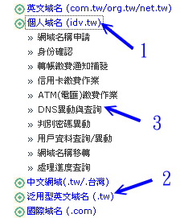
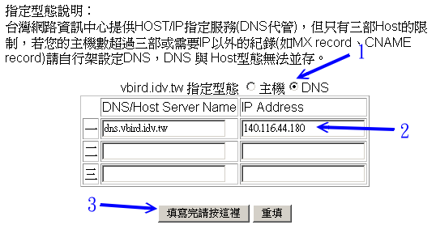

其实， DNS 服务器的运作原理与架设方式的变化，真的很高深莫测的！在这里，我们额外的提出一些比较进阶的内容给大家参考参考，
例如架设一个合法授权的 DNS 服务器以及利用 rndc 控管 DNS 系统喔！
 19.6.1 架设一个合法授权的 DNS 服务器
19.6.1 架设一个合法授权的 DNS 服务器
好啦！现在你应该知道什么是『经上游授权的合法 DNS 服务器』了吧？
没错！就是上游的 DNS 服务器将子域的查核权开放给你来设定就对啦！嗯！虽然知道原理，但是那么我要如何来架设一个合法的
DNS 服务器呢？好让我自己管理自己的 domain！举例来说，鸟哥的 vbird.idv.tw 就是鸟哥自己管理的哩～底下我们就来谈一谈，如何向
ISP 申请一个合法授权的 DNS 服务器，或者是合法的主机名啊！
1. 申请一个合法的 domain name ...就是要花钱！
既然是要建立一个合法的 DNS server，自然就要向合法的 ISP 申请授权啰！目前你可以到底下的地方去申请喔！
其实 TWNIC 已经将台湾地区的一些 domain 授权给各大 ISP 管理了，所以你连接上述的网站之后，可以点选里头相关的连结到各大
ISP 去注册！例如鸟哥就在 Hinet 注册了 vbird.idv.tw 这个网域！现在鸟哥就以 Hinet 的注册做为说明吧：
- 进入主画面：
直接连结到底下的网页去：
http://domain.hinet.net
- 选择需要的域名，并查询该网域是否已存在：
因为网域必需是独一无二的，所以你必需使用该网页当中提供的查询功能，
去查询一下你想要的网域是否已经被注册了呢？一定要没有被注册的网域才可以喔！
- 逐步进行注册：
你可以选择很多种类的领域来注册，如果想要注册个人网站，请按下图所指的 (1) 处，如果想要注册类似 vbird.tw
这种网域的话，则可以选择 (2) 所指的那个项目。然后以该网站提供的功能一步一步的往下去进行，
例如以鸟哥的『个人网址』之注册为例，按下个人网址之后，会出现流程步骤为：

图 19.6-1、以 Hinet 网站为依据介绍注册 domain 的方法
请依序一步一步的将他完成，最后你会得到一组账号密码，就能够修改自己的领域啦！
- 选择网站代管或架设 DNS 模式：
我们可以直接请 ISP 帮我们设定好 host 对应 IP 就好(最多三部)，当然也可以自行设定一下我们所需要的 DNS
服务器啦！如果未来你可能会架设 mail server ，所以还是自行设定 DNS 主机好了！你可以选择图 19.6-1 在 (3)
所指的『DNS异动与查询』项目，会出现下面图标。记得选择『DNS』及填写你的 hostname 与正确的 IP 即可喔！注意：
要填选这个项目，最好你的 IP 是固定制的，浮动制的 IP 不建议用这个选项！

图 19.6-2、以 Hinet 网站为依据介绍注册 domain 的方法
如果你已经以 DNS 服务器的方式申请了一个 domain name ，那么你就必须要设定你的 DNS 主机了！
请注意，这个情况之下，你只要设定你的注册的网域的正解即可！
反解部分则先不要理会，当然，如果你有办法的话，最好还是请上层的 ISP 帮你设定啰！
设定一部合法的 DNS 完毕后，建议你可以到这个网站去查询一下你的设定是否妥当：
如此一来，你的 DNS 主机上面设定的任何信息，都可以透过 Internet
上面的任何一部主机来查询到喔！够棒吧！心动了吗？赶快去试看看吧！ ^_^
19.6.2 LAME Server 的问题
或许你曾经在 /var/log/messages 里面看到类似这样的讯息：
[root@www ~]# more /var/log/messages
1 Oct 5 05:02:30 test named[432]: lame server resolving '68.206.244.205.
in-addr.arpa' (in '206.244.205.in-addr.arpa'?): 205.244.200.3#53
2 Oct 5 05:02:31 test named[432]: lame server resolving '68.206.244.205.
in-addr.arpa' (in '206.244.205.in-addr.arpa'?): 206.105.201.35#53
3 Oct 5 05:02:41 test named[432]: lame server resolving '68.206.244.205.
in-addr.arpa' (in '206.244.205.in-addr.arpa'?): 205.244.112.20#53
|
这是什么东西吶？根据官方提供的文件资料来看 (
在你的 CentOS 6.x 的系统下，请察看这个档案『 /usr/share/doc/bind-9.7.0/arm/Bv9ARM.ch06.html 』
)，当我们的 DNS 服务器在向外面的 DNS 系统查询某些正反解时，可能由于
『对方』 DNS 主机的设定错误，导致无法解析到预期的正反解结果，这个时候就会发生所谓的
lame server 的错误！
那么这个错误会让我们的 DNS 服务器发生什么严重的后果吗？既然仅是对方的设定错误，所以自然就不会影响我们的 DNS 服务器的正常作业了。
只是我们的 DNS 主机在查询时，会发生无法正确解析的警告讯息而已，
这个讯息虽然不会对我们的 Linux 主机发生什么困扰，不过，对于系统管理员来说，
要天天查询的 /var/log/messages 档案竟然有这么多的登录信息，这是很讨厌的一件事！
好了，我们知道 lame server 是对方主机的问题，对我们主机没有影响，但是却又不想要让该讯息出现在我们的登录档
/var/log/messages 当中，怎么达到这样的功能呢？呵呵！就直接利用 BIND 这个软件所提供的登录文件参数啊！
动作很简单，在你的 /etc/named.conf 档案当中的最底下，加入这个参数即可：
# 1. 修改 /etc/named.conf
[root@www ~]# vim /etc/named.conf
// 加入底下这个参数：
logging {
category lame-servers { null; };
};
# 2. 重新启动 bind
[root@www ~]# /etc/init.d/named restart
|
基本上，那个 logging 是主机的登录文件记录的一个设定项目，因为我们不要 lame server 的信息，
所以才将他设定为无 (null) ，这样就改完了！记得重新启动 named 之后，还是要察看一下 /var/log/messages 喔！
以确定 named 的正确启动与否！然后，嘿嘿，以后就不会看到 lame server 咯！
19.6.3 利用 RNDC 指令管理 DNS 服务器
不知道你会不会觉得很奇怪，那就是为啥启动 DNS 后，在 /var/log/messages 老是看到这一句话：
command channel listening on 127.0.0.1#953
|
而且在本机端的 port 953 还多了个 named 所启动的服务，那是啥？那就是所谓的 rndc 了。这个 rndc 是
BIND version 9 以后所提供的功能啦，他可以让你很轻松的管理你自己的 DNS 服务器喔！
包括可以检查已经存在 DNS 快取当中的资料、重新更新某个 zone 而不需要重新启动整个 DNS ，
以及检查 DNS 的状态与统计资料等等的，挺有趣的！
不过，因为 rndc 可以很深入的管理你的 DNS 服务器，所以当然要进行一些控管啦！
控管的方式是经过 rndc 的设定来建立一支密钥 (rndc key)，并将这支密钥相关的信息写入你的
named.conf 配置文件当中，重新启动 DNS 后，你的 DNS 就能够藉由 rndc 这个指令来管理啰！
事实上，新版的 distributions 通常已经帮你主动的建立好 rndc key 了，所以你不需要忙碌～
不过，如果你还是在登录档当中发现一些错误，例如：
couldn't add command channel 127.0.0.1#953: not found
|
那就表示你 DNS 的 rndc key 没有设定好啦！那要如何设定好？很简单～只要先建立一把 rndc key ，然后加到
named.conf 当中去即可！你可以使用 bind 提供的指令来进行这样的工作喔！
# 1. 先建立 rndc key 的相关数据吧！
[root@www ~]# rndc-confgen
# Start of rndc.conf <==底下没有 # 的第一部份请复制到 /etc/rndc.conf 中
key "rndc-key" {
algorithm hmac-md5;
secret "UUqxyIwui+22CobCYFj5kg==";
};
options {
default-key "rndc-key";
default-server 127.0.0.1;
default-port 953;
};
# End of rndc.conf
# 至于底下的 key 与 controls 部分，则请复制到 named.conf 且解开 # 喔！
# Use with the following in named.conf, adjusting the allow list as needed:
# key "rndc-key" {
# algorithm hmac-md5;
# secret "UUqxyIwui+22CobCYFj5kg==";
# };
#
# controls {
# inet 127.0.0.1 port 953
# allow { 127.0.0.1; } keys { "rndc-key"; };
# };
# End of named.conf
# 请注意，这个 rndc-confgen 是利用随机数计算出加密的那把 key ，
# 所以每次执行的结果都不一样。所以上述的数据与你的屏幕会有点不同。
# 2. 建立 rndc.key 档案
[root@www ~]# vim /etc/rndc.key
# 在这个档案当中将原本的数据全部删除，并将刚刚得到的结果给他贴上去
key "rndc-key" {
algorithm hmac-md5;
secret "UUqxyIwui+22CobCYFj5kg==";
};
# 3. 修改 named.conf
[root@www ~]# vim /etc/named.conf
# 在某个不被影响的角落建置如下的内容：
key "rndc-key" {
algorithm hmac-md5;
secret "UUqxyIwui+22CobCYFj5kg==";
};
controls {
inet 127.0.0.1 port 953
allow { 127.0.0.1; } keys { "rndc-key"; };
};
[root@www ~]# /etc/init.d/named restart
|
建立了rndc key 并且启动 DNS ，同时你的系统也已经有 port 953 之后，我们就可以在本机执行 rndc
这个指令了。这个指令的用法请直接输入 rndc 来查询即可：
[root@www ~]# rndc
Usage: rndc [-c config] [-s server] [-p port]
[-k key-file ] [-y key] [-V] command
command is one of the following:
reload Reload configuration file and zones.
stats Write server statistics to the statistics file.
dumpdb Dump cache(s) to the dump file (named_dump.db).
flush Flushes all of the server's caches.
status Display status of the server.
# 其他就给他省略啦！请自行输入这个指令来参考啰！
|
那如何使用呢？我们举几个小例子来说明吧！
# 范例一：将目前 DNS 服务器的状态显示出来
[root@www ~]# rndc status
version: 9.7.0-P2-RedHat-9.7.0-5.P2.el6_0.1
CPUs found: 1
worker threads: 1
number of zones: 27 <==这部 DNS 管理的 zone 数量
debug level: 0 <==是否具有 debug 及 debug 的等级
xfers running: 0
xfers deferred: 0
soa queries in progress: 0
query logging is OFF <==是否具有 debug 及 debug 的等级
recursive clients: 0/0/1000
tcp clients: 0/100
server is up and running <==是否具有 debug 及 debug 的等级
# 范例二：将目前系统的 DNS 统计数据记录下来
[root@www ~]# rndc stats
# 此时，预设会在 /var/named/data 内产生新档案，你可以去查阅：
[root@www ~]# cat /var/named/data/named_stats.txt
+++ Statistics Dump +++ (1312528012)
....(中间省略)....
++ Zone Maintenance Statistics ++
2 IPv4 notifies sent
++ Resolver Statistics ++
....(中间省略)....
++ Cache DB RRsets ++
[View: lan (Cache: lan)]
[View: wan (Cache: wan)]
[View: _bind (Cache: _bind)]
[View: _meta (Cache: _meta)]
++ Socket I/O Statistics ++
5 UDP/IPv4 sockets opened
4 TCP/IPv4 sockets opened
2 UDP/IPv4 sockets closed
1 TCP/IPv4 sockets closed
2 TCP/IPv4 connections accepted
++ Per Zone Query Statistics ++
--- Statistics Dump --- (1312528012)
# 范例三：将目前高速缓存当中的数据记录下来
[root@www ~]# rndc dumpdb
# 与 stats 类似，会将 cache 的数据放置成为一个档案，你可以去查阅：
# /var/named/data/cache_dump.db
|
如果你在执行 rndc 指令时老是出现如下错误：
rndc: connection to remote host closed
This may indicate that the remote server is using an older version of
the command protocol, this host is not authorized to connect,
or the key is invalid.
|
这表示你的 /etc/rndc.key 与 /etc/rndc.conf 内密钥的编码不同所致。
请你自行以上述的 rndc-confgen 的方式自行处理你的 rndc key ，并重新启动 named 即可啊！
用这东西管理，你就不需要每次都重新启动 named 啰！ ^_^
19.6.4 架设动态 DNS 服务器：
让你成为 ISP 啦！
什么是动态 DNS (Dynamic DNS, DDNS) 主机呢？还记得我们在第十章里面提到，
如果我们本身是以拨接制的 ADSL 连上 Internet 时，我们的 IP 通常是 ISP 随机提供的，因此每次上网的 IP 都不固定，所以，
我们没有办法以上面的 DNS 设定来给予这种连上 Internet 的方法一个适当的主机名。
也因此，如果我们想要利用这种没有固定 IP 的联机方法架设网站时，就得要有特殊的管道了～
其中之一的方法就是利用 Internet 上面已经提供的免费动态 IP 对应主机名的服务！
例如： http://www.no-ip.org 。
提供这样的服务利用的是什么原理呢？基本上， DNS 主机还是得要提供 Internet 相关的 zone
的主机名与 IP 的对应数据才行，所以，DDNS 主机
就必须要提供一个机制，让客户端可以透过这个机制来修改他们在 DDNS 主机上面的
zone file 内的资料才行。
那会不会很难啊？不会啊！我们的 BIND 9 就有提供类似的机制啦！那就是利用
update-policy 这个选项，配合认证用的 key 来进行数据文件的更新。简单的说，
1) 我们的 DDNS 主机先提供 Client 一把 Key (就是认证用的数据，
你可以将他想成是账号与密码的概念)， 2) Client 端利用这把 Key ，并配合 BIND 9 的 nsupdate 指令，
就可以连上 DDNS 主机，并且修改主机上面的 Zone file 内的对应表了。感觉上很像很简单喔！
没错啊！架设上真的很简单的～底下我们就来尝试设定一下喔：
假设我有一个朋友，他使用的 Linux 主机的 IP 是会随时变动的，但是他想要架设 Web 网站，
所以他向我申请了一个领域名，那就是 web.centos.vbird ，此时我必需要给他一把密钥，
并且设定我的 named.conf 让 centos.vbird 这个 zone 能够接受来自客户端的数据更新才行！首先来建立这把密钥吧！
[root@www ~]# dnssec-keygen -a [算法] -b [密码长度] -n [类型] 名称
选项与参数：
-a ：后面接的 [type] 为演算方式的意思，主要有 RSAMD5, RSA, DSA, DH
与 HMAC-MD5 等。建议你可以使用常见的 HMAC-MD5 来演算密码；
-b ：你的密码长度为多少？通常给予 512 位的 HMAC-MD5；
-n ：后面接的则是客户端能够更新的类型，主要有底下两种，建议给 HOST 即可：
ZONE：客户端可以更新任何标志及整个 ZONE；
HOST：客户端仅可以针对他的主机名来更新。
[root@www ~]# cd /etc/named
[root@www named]# dnssec-keygen -a HMAC-MD5 -b 512 -n HOST web
Kweb.+157+36124
[root@www named]# ls -l
-rw-------. 1 root root 112 Aug 5 15:22 Kweb.+157+36124.key
-rw-------. 1 root root 229 Aug 5 15:22 Kweb.+157+36124.private
# 上面那把是公钥，下面那把则是私钥档案！
[root@www named]# cat Kweb.+157+36124.key <==看一下公钥！
web. IN KEY 512 3 157 xZmUo8ozG8f2OSg/cqH8Bqxk59Ho8....3s9IjUxpFB4Q==
# 注意到最右边的那个密码长度，等一下我们要复制的仅有那个地方！
|
接下来你必需要：将公钥的密码复制到 /etc/named.conf 当中，将私钥传给你的
web.centos.vbird 那部主机上！好了，那就开始来修改 named.conf 内的相关设定吧！
[root@www ~]# vim /etc/named.conf
// 先在任意地方加入这个 Key 的相关密码信息！
key "web" {
algorithm hmac-md5;
secret "xZmUo8ozG8f2OSg/cqH8Bqxk59Ho8....3s9IjUxpFB4Q==";
};
// 然后将你原本的 zone 加入底下这一段宣示
zone "centos.vbird" IN {
type master;
file "named.centos.vbird";
allow-transfer { 192.168.100.10; };
update-policy {
grant web name web.centos.vbird. A;
};
};
[root@www ~]# chmod g+w /var/named
[root@www ~]# chown named /var/named/named.centos.vbird
[root@www ~]# /etc/init.d/named restart
[root@www ~]# setsebool -P named_write_master_zones=1
|
注意到上头的 grant web name web.centos.vbird. A; 那一行，
grant 后面接的就是 key 的名称，也就是说，我这把 web 的 key
在这个 zone (centos.vbird) 里面可以修改主机名 web.centos.vbird
的 A 的标志，亦即是修改主机的 IP 对应啦！语法也就是：
grant [key_name] name [hostname] 标签
也就是说，我的一把 key 其实可以给予多种权限喔！就看你如何规范了。
设定好之后，由于未来客户端传来的信息是由我们主机的 named 所写入，
写入的目录在 /var/named/ 当中，所以你必需要修改一下权限喔！
给他重新启动 DNS，然后观察一下 /var/log/messages 里面有没有错误即可！
如此一来，DDNS 主机端就设定妥当啰！
接下来则是 DDNS Client 端的更新了。首先，你必须要由 Server 端取得刚刚建立的那两个档案，
请将刚刚建立的 Kweb.+157+36124.key 及 Kweb.+157+36124.private 利用 SSH 的 sftp 传送到客户端，
亦即是那部 web.centos.vbird 主机上头，
假设你已经将这两个档案放置到 /usr/local/ddns 里面去，然后测试看看：
[root@web ~]# cd /usr/local/ddns
[root@web ddns]# nsupdate -k Kweb.+157+36124.key
> server 192.168.100.254
> update delete web.centos.vbird <==删除原有的
> update add web.centos.vbird 600 A 192.168.100.200 <==更新到最新的
> send
> 最后在此按下 [ctrl]+D 即可
|
请注意到『 update add web.centos.vbird 600 A 192.168.100.200 』这行，
他的意义说的是，新增一笔数据， ttl 是 600 ，给予 A 的标签，对应到 192.168.100.200 的意思～
至于 nsupdate -k 后面加的则是我们在 Server 端产生的那个 key 档案！
然后你就会发现到在 DNS 服务器端的 /var/named/
里面多出一个暂存档，那就是 named.centos.vbird.jnl
当然，/var/named/named.centos.vbird 就会随着客户端的要求而更新数据喔！
由于手动更新好像挺麻烦的，我们就让 Client 自动更新吧！利用底下这个 script 即可！
[root@web ~]# vim /usr/local/ddns/ddns_update.sh
#!/bin/bash
PATH=/sbin:/bin:/usr/sbin:/usr/bin
export PATH
# 0. keyin your parameters
basedir="/usr/local/ddns" # 基本工作目录
keyfile="$basedir"/"Kweb.+157+36124.key" # 将档名填进去吧！
ttl=600 # 你可以指定 ttl 的时间喔！
outif="eth0" # 对外的联机接口！
hostname="web.centos.vbird" # 你向 ISP 取得的那个主机名啦！
servername="192.168.100.254" # 就是你的 ISP 啊！
# Get your new IP
newip=`ifconfig "$outif" | grep 'inet addr' | \
awk '{print $2}' | sed -e "s/addr\://"`
checkip=`echo $newip | grep "^[0-9]"`
if [ "$checkip" == "" ]; then
echo "$0: The interface can't connect internet...."
exit 1
fi
# create the temporal file
tmpfile=$basedir/tmp.txt
cd $basedir
echo "server $servername" > $tmpfile
echo "update delete $hostname A " >> $tmpfile
echo "update add $hostname $ttl A $newip" >> $tmpfile
echo "send" >> $tmpfile
# send your IP to server
nsupdate -k $keyfile -v $tmpfile
|
你只要将上述的程序里面，特殊字体的部分给他修改一下，就能够以 /etc/crontab
的方式在你的系统内自动执行了！这支程序你也可以在底下的连结下载：
利用 BIND 9 所提供的这个服务，我们只要具有一组固定的 IP ，并向 ISP 申请一个合法授权的 domain name，
就可以提供不论是固定或者是非固定的 IP 使用者，一个合法的主机名了！
并且，使用者也可以自行透过 nsupdate 来修改自己的 IP 对应！以让自己的主机 IP
永远与主机名保持正确的对应！这对只有拨接制上网的用户来说，真是方便啊！